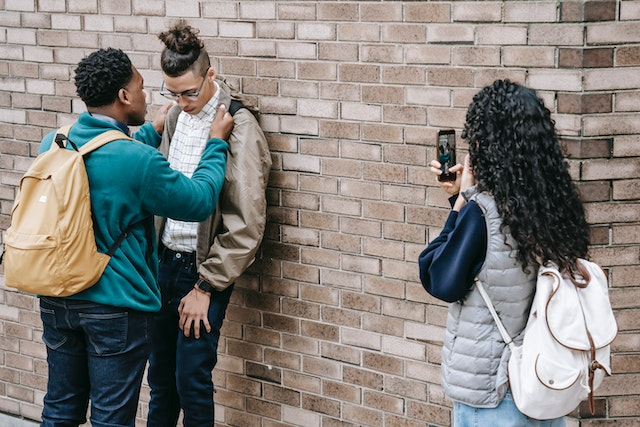
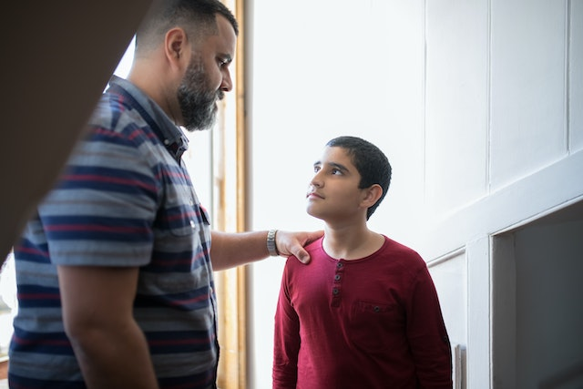

Para a conclusão do tema, esta seção apresenta ações que irão transformar positivamente a visão, os valores, os ideais e a reconstrução permanente do que se trata o ambiente escolar para toda a sociedade. Assim, diminuindo drasticamente a ocorrência de atentados escolares e um melhor convívio entre os alunos.
- Mostrar aos alunos o que é verdadeiramente o bullying e a maneira correta de se lidar com esse problema;
- Comportamentos, ética e valores trabalhados através de metodologias pedagógicas e psicológicas na adolescência;
- Motivar a compreensão das influências negativas da internet e as suas consequências;
- Trabalhar em sala o que são os atentados escolares e como lidar com eles.
Mostrar aos alunos o que é verdadeiramente o bullying e a maneira correta de se lidar com esse problema
Conhecimento não é aquilo que você sabe, mas o que você faz com aquilo que você sabe
, Aldous Huxley.
O bullying, na maioria das vezes, não é combatido da maneira correta. As vezes sendo escondido por trás de castigos, sem nenhum fundamento, apenas com o intuito de deixarem o problema de lado e continuar como se nada tivesse ocorrido.
Devemos instruir crianças e adolescentes sobre o bullying, que não é apenas a violência o problema, mas também os motivos por trás dela.
Ele é a consequência de pensamentos negativos a respeito de alguém, características de pessoas ou ideologias de outros. Exemplos: uma pessoa islâmica sofrendo bullying, sendo chamada de terrorista; ou ainda, uma pessoa com sobrepeso sofrendo bullying, sendo chamada de baleia.
Porém, ao se utilizar uma analogia, se um comediante estiver utilizando destes tipos de ideias para causar humor, ele obviamente não está cometendo bullying. Pois, atividades de stand-up tem como fundamento colocar os outros longe de alguma realidade, e assim causar o humor. As verdadeiras brincadeiras na escola têm esse objetivo. Mas, se alguém for realizar uma "brincadeira" com o intuito de aproximar outra pessoa de alguma realidade e causar sentimentos negativos a ela, é considerado bullying.

O bullying é capaz de mudar por completo a vida de alguém
O papel da escola, portanto, é mostrar e influenciar a maturidade das brincadeiras para as crianças e os adolescentes. Não com o intuito de retirar da infância das crianças as brincadeiras, mas sim de diferenciar tipos de brincadeiras a serem feitas no ambiente escolar. E nos adolescentes, mostrar a eles que estão quase se tornando adultos, e que em outros ambientes eles não serão tolerados por qualquer coisa, ou seja, influenciar a maturidade.
Comportamentos, ética e valores trabalhados através de metodologias pedagógicas e psicológicas na adolescência
Existem apenas duas maneiras de influenciar o comportamento humano: você pode manipular ou inspirar
, Simon Sinek.
Infância
Lembra das 5 palavrinhas mágicas aprendidas no primeiro aninho? A educação não somente se trata de ensinar conteúdos, mas sim de influenciar positivamente as crianças e os adolescentes a conviver em sociedade.
Aprendemos a respeitar independentemente de quem for, seja diferente em aspectos de gênero, etnia, raça e religião ou não. Aprendemos e utilizamos boas maneiras de se conviver em sociedade, através da colaboração e da empatia.
O problema
As influências positivas sobre o desenvolvimento da educação, do bom comportamento e do respeito são abordadas com ênfase, muitas das vezes, somente nos cinco primeiros anos do ensino fundamental, por conta de muitos professores que dão aula no ensino fundamental I terem formação em pedagogia.
Logo, com o avanço dos anos escolares, há um decaimento nestas influências. O que pode levar a falta de esclarecimento sobre maneiras de se lidar com sentimentos de ódio, tristeza, inveja, e muitos outros. E, adicionando a influência de pessoas e ideologias extremistas, algumas crianças e adolescentes infelizmente se tornem apoiadores destas ideias e possam cometer atrocidades.
Nunca houve casos de atentados escolares praticados por alunos menores de 10 anos de idade. Isso se decorre por conta do processo de aprendizagem sobre os valores e convívio social citado acima. Então, compreende-se que os atentados são cometidos com maior frequência na adolescência, em que se têm uma idade que varia dentre 12 a 18 anos.
Adolescência
A adolescência é uma fase cheia de questionamentos e instabilidade, que se caracteriza por uma intensa busca de si mesmo e da própria identidade, os padrões estabelecidos são questionados, bem como criticadas todas as escolhas de vida feita pelos pais, buscando assim a liberdade e autoafirmação.
A adolescência, além dos fatores biológicos é influenciada pelo ambiente familiar, cultural e social. Além de haver mais mudanças presentes na adolescência do que em qualquer outra etapa no desenvolvimento humano.
Sendo assim, é de extrema importância que haja metodologias pedagógicas e psicológicas para guiar e a instruir os adolescentes na fase mais complicada da vida deles. Mas, em muitas escolas, há a deficiência destas abordagens.
Logo, uma das maneiras de se melhorar o convívio escolar é desenvolver uma melhor compreensão dos adolescentes e o auxílio a eles. Porque é necessário entendermos os seus pensamentos, dificuldades e problemas para ajudarmos a não desenvolverem traumas, maus comportamentos e a desvalorização do ambiente escolar e da sociedade como um todo.
É fundamental estarmos atentos sobre como está a saúde mental dos jovens
Motivar a compreensão das influências negativas da internet e as suas consequências
Ao dar às pessoas o poder de partilhar, estamos tornando o mundo mais transparente
, Mark Zuckerberg.
Durante a evolução da internet e das redes sociais, se tornou mais fácil de se expressar e de mostrar as suas opiniões. Logo, qualquer pessoa pode se expressar da maneira como achar correta. A sociedade não é perfeita e é normal pessoas terem opiniões divergentes em relação a algum assunto. Porém, muitas das vezes, as pessoas acreditam que na vida real devem se portar com mais restrições em relação ao ambiente virtual.
O maior problema da internet e das redes sociais é de não termos total controle daquilo que vemos ou recebemos. E isso pode se tornar muito perigoso se tratando de pessoas com más intenções. Como por exemplo, pessoas que possuem ideologias machistas, racistas, nazistas e homofóbicas.
Ao dar exemplo dos atentados de Realengo e de Suzano, vemos que os dois casos tinham similaridades na questão de grupos de pessoas que tinham uma visão totalmente depreciada da sociedade. Após ocorrer o atentado de Realengo, em um fórum opressor de minorias, internautas comemoraram e exaltaram a ação do atirador Wellington Menezes de Oliveira, sendo tratado neste fórum como "herói". Além do fato de o dono deste fórum ser o mesmo criador do site utilizado pelos assassinos do massacre de Suzano.
Não são somente grupos e fóruns extremistas que buscam disseminar a cultura do ódio, como também sendo disseminada por pessoas "normais" e que influenciam a muitos. Estas pessoas não utilizam de acesso ilegal a fóruns ou grupos para partilharem imaturidade, discursos de ódio e outras características negativas, mas sim utilizam da influência adquirida em plataformas digitais.
Então, é essencial que seja motivado aos alunos o saber sobre os perigos da má influência de grupos extremistas e opressores, como também de pessoas que não aparentam ter má índole, mas que a influenciam para ter maus comportamentos e a falta do desenvolvimento da maturidade e do bom convívio social.
Em resumo, devemos abordar em sala de aula o desenvolvimento da análise crítica, para se analisar objetivamente e racionalmente o que consumimos no nosso cotidiano e no que isso causa a nós, e também a de se entender que nem tudo que está na internet é verdade, até porque as pessoas mentem, e dependendo da forma como lidamos com as informações, pode nos trazer consequências gravíssimas.
 Na internet, há coisas que devemos nos bloquear. Toxidade é uma delas
Na internet, há coisas que devemos nos bloquear. Toxidade é uma delas
Trabalhar em sala o que são os atentados escolares e como lidar com eles
O conhecimento é como uma vela, que quando compartilhada ilumina a todos
, Thomas Jefferson.
De primeiro modo, é complicado abordar um assunto extremamente complexo e pesado para os alunos, especialmente para os que estão no fundamental. Mas, é necessário falar com os alunos sobre este assunto. Entretanto, não somente falar sobre, como também divulgar o que fazer quando o aluno futuramente se deparar com alguma notícia, post, ou algo relacionado a isso.
O essencial que os estudantes devem cumprir, para se manter uma ordem em decorrência dos posts em redes sociais, é não compartilharem "fake news". Elas são um grande problema, informações falsas que são facilmente espalhadas. Então, para facilitar o trabalho da segurança pública, é preciso não compartilhar posts ou ameaças em redes sociais. Permitindo as devidas autoridades lidarem da maneira correta com a situação e não causar pavor e medo na população.
Além de também mostrar aos alunos formas de se proteger em um conflito real. Utilizando os protocolos de segurança combinados com a equipe gestora, presentes em cada instituição de ensino. Como por exemplo, o conhecimento dos locais do colégio mais seguros e formas de evacuação necessária.
É necessário educar e guiar os alunos
As mudanças não ocorrem apenas dentro da escola: o papel da família.
É essencial entender que não é somente a escola que poderá causar mudanças positivas ao estado comportamental e mental dos alunos. A família deve também se posicionar a respeito de como eles estão. Dando ênfase aos adolescentes, por conta das suas mudanças hormonais que podem causar dificuldades ao manter diálogo no lar.
Internet e redes sociais
Dialogar sobre a forma como eles utilizam a internet é algo bastante debatido, tratando sobre limites a serem colocados. Porém, é muito mais debatido a questão do que se proibir do que se permitir. E é através disso que muitas crianças e adolescentes podem acabar ficando indignados com algumas destas restrições.

Porém, há certas restrições de extrema necessidade ao depender da idade da criança ou adolescente. Como por exemplo, o contato com pessoas que não se conhece e, extremo cuidado em relação a abusos como a pedofilia.
Portanto, é preciso conversar com eles sobre as maneiras certas de se utilizar a internet e as redes sociais com moderação para não prejudicar os seus desemprenhos acadêmicos e também para não acabar se tornando um vício.
Jogos virtuais
Os jogos virtuais foram e são debatidos com frequência se tratando sobre violência e a influência que eles podem ter na vida de muitas crianças e adolescentes. Sobre o tema, há diversas opiniões que algumas são bem neutras como outras são muito extremistas.
Após ter ocorrido o massacre em Suzano e ter sido descoberto que os assassinos constantemente jogavam jogos de violência, muitas pesquisas foram levantadas com o intuito de se explicar a relação que há entre os jogos e o comportamento humano.
Os comportamentos influenciam no que se refere às questões emocionais e relacionais. Pessoas que passam horas jogando jogos violentos estão mais propensas a serem mais irritadas, a terem pensamentos mais negativistas, a serem mais imediatistas e a terem dificuldades nas relações interpessoais
, explica Caroline Chiarelli Colle, psicóloga e neuropsicóloga. Ela também acredita que não há como afirmar que foi influência dos jogos a causa do massacre de Suzano, pois há vários adolescentes e jovens que jogam e não possuem traços violentos.
Então, a verdadeira pergunta que se deve fazer não é a de que: "Jogos violentos tornam as crianças e os adolescentes violentos?", mas sim: "Como cada criança e adolescente se sente ao jogar jogos violentos?". O ideal é sempre manter o diálogo presente, para então se entender como a criança ou o adolescente pensa, age e se os jogos, sendo violentos ou não, trazem impactos negativos a ela.
Bullying
O bullying é um assunto que nunca parará de ser discutido. Pois é uma das principais bases para acontecer algum desentendimento dentro das escolas. Logo, não é algo a ser ignorado ou a ser tratatado com indiferença.
A base que fortalece os laços de uma família é o diálogo. E como citado diversos momentos antes, o bullying é um problema que somente se dá para resolver com diálogo. Tanto da parte de quem comete, quanto da parte de quem sofre.

O diálogo deverá ter o intuito de conscientizar a criança ou o adolescente sobre o problema. Alertar sobre os perigos dos tipos de brincadeiras usadas e influenciar a maturidade. Como também acolher e guiar eles para desenvolverem resiliência e inteligência emocional.
É o papel da família auxiliar a criança ou o adolescente que está ou já passou por alguma situação de bullying. Se for um adolescente que sofreu bullying, deve-se estar presente mais do que nunca, pois os hormônios e os sentimentos do adolescente poderão influencia-lo a piorar a situação, talvez buscando vingança ou até mesmo a depressão.
Entretanto, dependendo de como o problema está, é fundamental entrar em contato com especialistas do ramo, como é o exemplo dos psicólogos e psiquiatras.